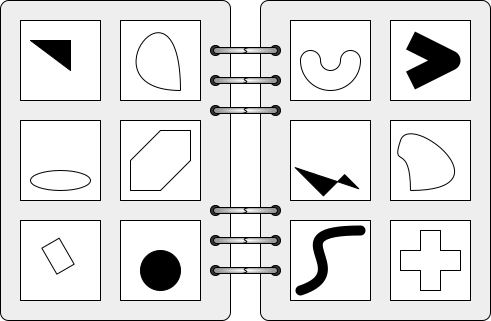

This will eventually morph into a page discussion Bongard Problems. Here's a picture of a Bongard problem, to get us started.

The creator of a Bongard problem draws a distinction between two sets of six objects. The puzzle is to determine the motive behind the distinction.